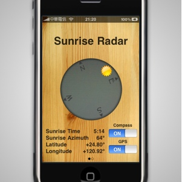

Friends Radar
Find out where your friends are.
朋友雷達
想知道好朋友與你之間的距離和方向嗎？使用朋友雷達，可以知道你的好朋友在世界各地的位置。
Introduction
App Store

Sunrise Radar
Don't let any reson stop you. Sunrise Radar helps you see beautiful sunrise.
日出雷達
追尋世界的開端，追求世界的起源，讓日出雷達帶你找到最美的那一刻。
Introduction
App Store
Picture Story
Times of your life.
Take story pictures.
And share stories with friends.
影像故事
每張照片都有它的故事，
我的故事，正要開始。
拍出屬於你的影像故事～
Introduction
App Store
Designed by MING-YEN. Made in Darcy Studio.
Email
: darcystudio@gmail.com
© 2010 Darcy Studio